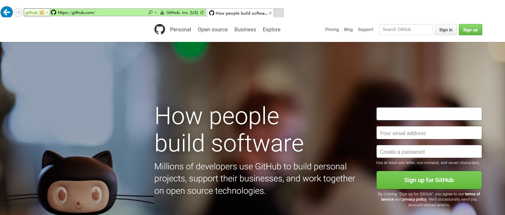
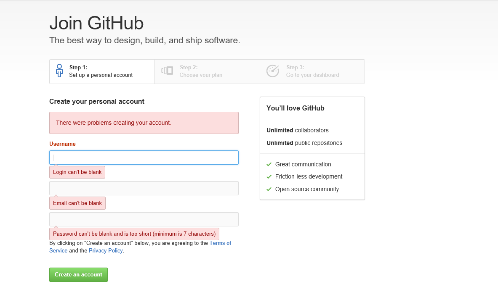
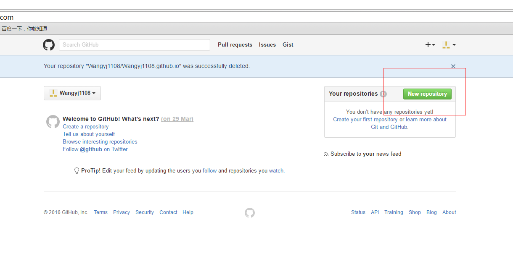
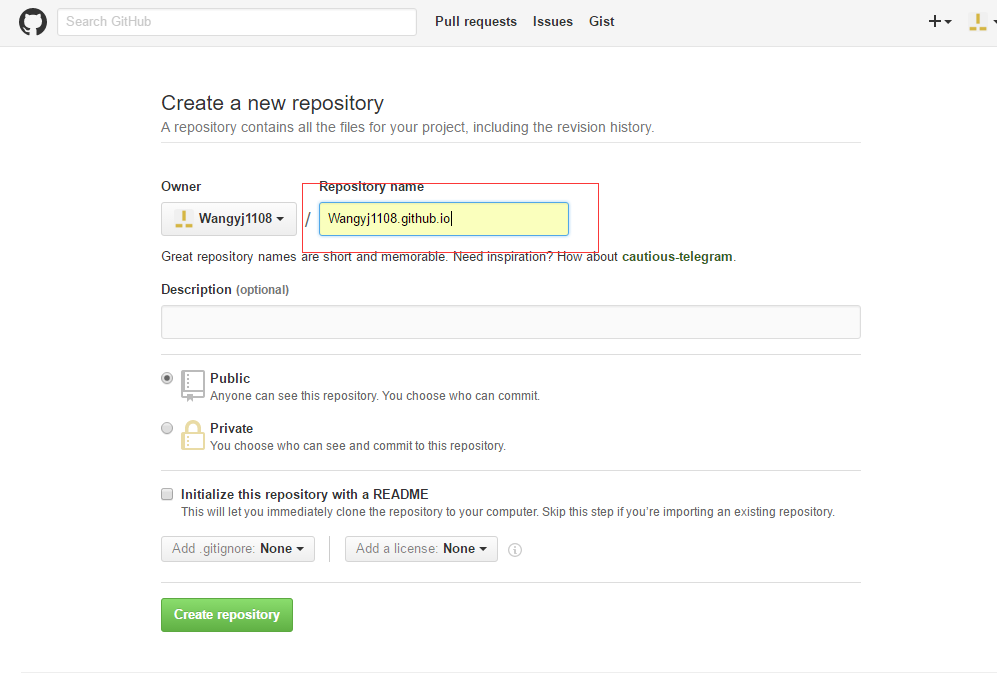
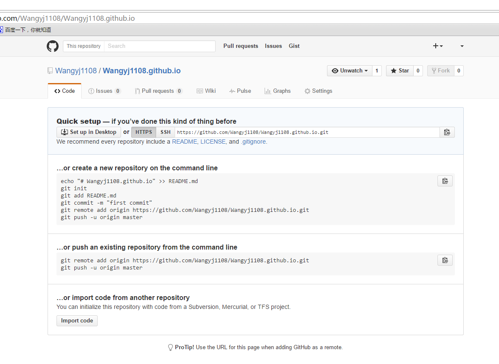
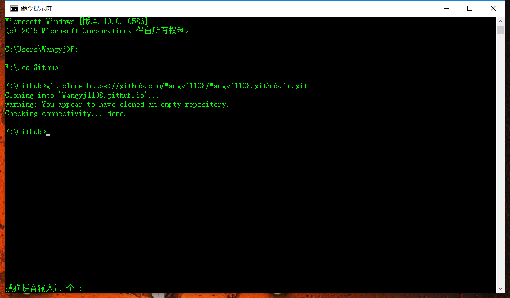
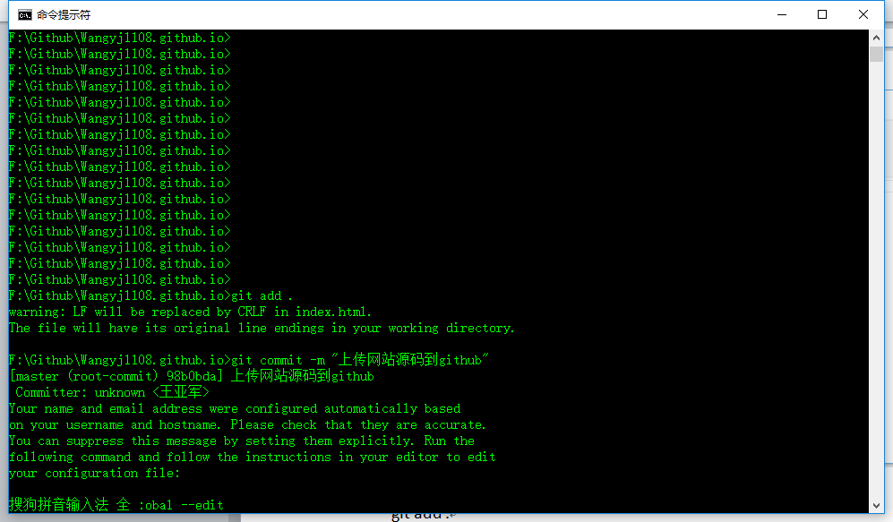
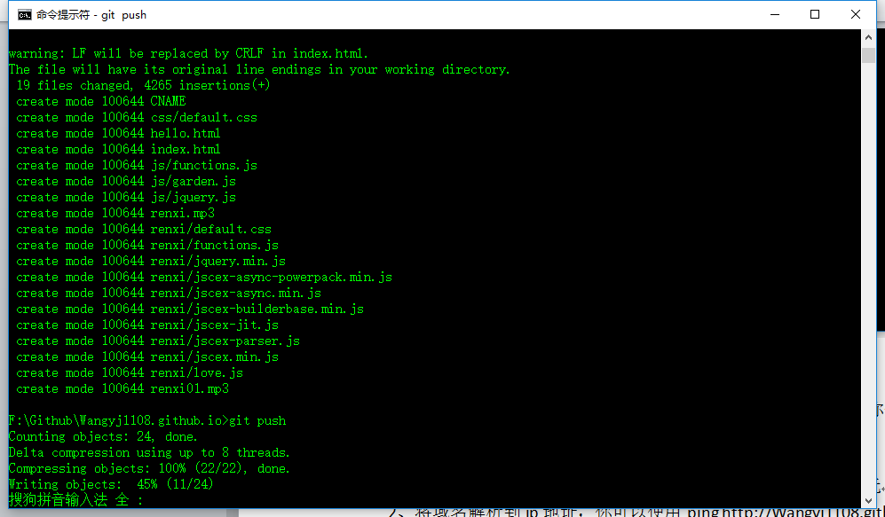

利用github搭建个人网站
一、Github Pages的使用
1、首先你得有一个Github账号，没有的话去github.com注册一个；
点击Sign up for Github进入注册页面
2、有了账号以后登录到Github新建仓库
（1）点击New repository新建仓库
（2）这里只需要注意一点Repository name要用Owner加上 .github.io然后点击create repository
（3）到这里仓库就新建好了
二、把源码上传到github仓库
1、clone到本地
（1）选择一个目录输入下面的指令
git clone https://github.com/Wangyj1108/Wangyj1108.github.io.git
注意：如果你的电脑不支持git命令你可以安装git，去git官网下载一个git到本地安装, 安装完成以后配置环境变量然后打开命令行输入git命令查看是否安装成功
2、clone到本地以后会在你选择的目录下生成一个Wangyj1108.github.io文件夹
进入到文件下，把你的代码放进去
3、打开命令行进入到Wangyj1108.github.io目录下依次执行下面的命令
git add .
git commit -m “up”
git push 并输入账号密码（github账号密码）
4、等待代码上传完成后你就可以访问http://Wangyj1108.github.io了